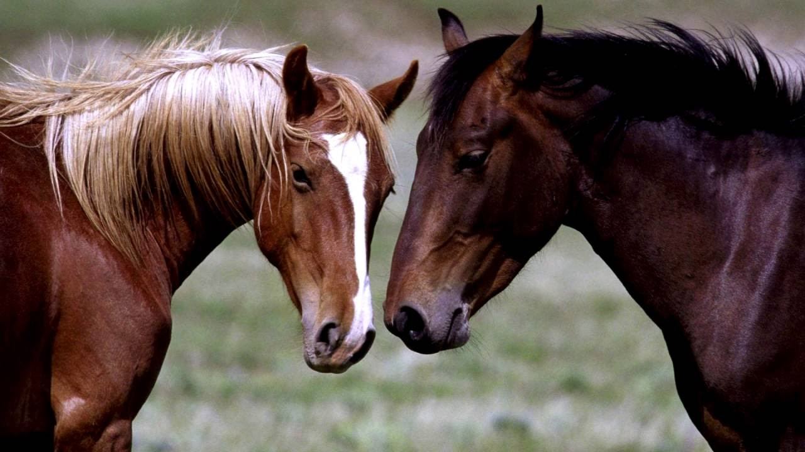

О лошадях
История и эволюция о лошадях
Лошади
Ло́шади (лат. Equus) — единственный современный род семейства лошадиных (Equidae) отряда непарнокопытных. Кладистический анализ, основанный на черепных и посткраниальных элементах (30 таксонов, 129 признаков), поддерживает монофилию рода Equus и отрицает признание родов Plesippus и Allohippus, поддерживает происхождение пустынной зебры (Equus grevyi) и членов клады зебры/осла от европейских лошадей Стенона. Недавние результаты исследования генома подтверждают монофилию рода Equus и указывают на его возникновение около 4,0—4,5 млн лет назад.

Экологическая проблема
До изобретения двигателя внутреннего сгорания основной экологической проблемой городов был конский навоз и моча. Одна лошадь выделяет в среднем 15 кг навоза и 4 литра мочи в день. В крупных городах конца XIX века, таких как Лондон, Париж и Нью-Йорк в транспорте было занято от 200 до 500 тыс. лошадей, оставлявших на улицах огромное количество навоза. Проблема очистки улиц была решена лишь с заменой лошадей автомобилями в первом десятилетии XX века[12].
Эволюционная история
Эволюция лошадей хорошо документирована ископаемыми остатками, свидетельствующими о том, как небольшое, размером с собаку лесное животное пропалеотерий, обладавшее пальцами вместо копыт, за 50 миллионов лет превратилось в крупных копытных обитателей открытых пространств. Основное видообразование происходило в пределах Северной Америки, откуда по существовавшему естественному мосту происходило их проникновение в Евразию, когда это было возможно в отсутствие Берингова пролива и до образования мощного ледникового щита.
Эволюция лошадей началась в эоцене, около 55 миллионов лет назад. В то время существовал гиракотерий — предок всех нынешних лошадей, маленький зверёк с высотой в плечах всего 20 см, разжёвывавший своими мелкими зубами листья и фрукты. Гиракотерий нисколько не напоминал сегодняшних лошадей. У этого зверька были выгнутая спина, короткая шея и морда, короткие лапы и длинный хвост. Это было коренастое существо размером с лисицу, с четырёхпалыми конечностями. Череп и объём мозга были относительно малые.
Линия, ведущая к современным одомашненным лошадям (DOM2) ответвляется по геномным данным от линии лошади Пржевальского 43,8 тыс. л. н., а от линии ленской лошади (Equus lensensis) — 118,6 тыс. л. н. Вымершая линия Equus lenensis распространилась в Южную Сибирь. После анализа графика основных компонент (PCA), филогенетической и f3-аутгрупповой кластеризации, выяснилось, что образец MerzlyYar_Rus45_23789 из Республики Тыва (урочище Мёрзлый Яр на западе Тоджинской котловины в верховьях реки Большой Енисей (местное название Бий Хем)) возрастом 24 000 л. н. несёт чрезвычайно расходящуюся митохондриальную ДНК, обнаруженную только на Новосибирских островах возрастом около 33 200 лет назад.
